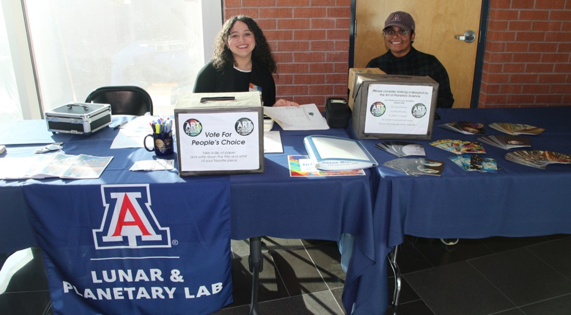
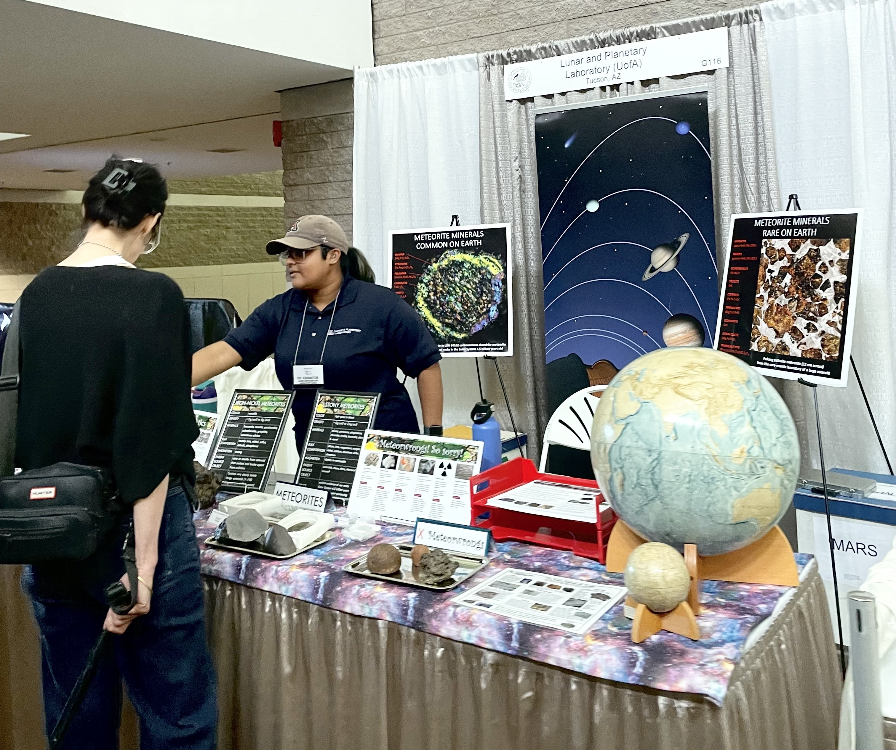

Graduate Research Assistant | Planetary Science PhD Student
I am passionate about science communication and community engagement. Below are highlights from my outreach, mentoring, and STEM education activities.
Lunar and Planetary Laboratory, Tucson, AZ | 2025, 2026

Working at the front desk for the Art of Planetary Science.
I helped facilitate the annual TAPS exhibition, which celebrates the beauty and elegance of the intersection between art and science. Activities included:
Lunar and Planetary Laboratory, Tucson, AZ | 2024, 2026

Voluntering at the LPL booth at the Tucson Gem and Mineral Show.
Engaged in hands-on activities with the public to inform the community about meteoritics. Topics included:
Email: christina@arizona.edu
GitHub: github.com/christinaysingh